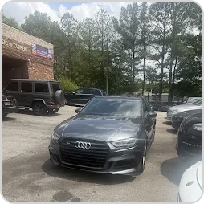
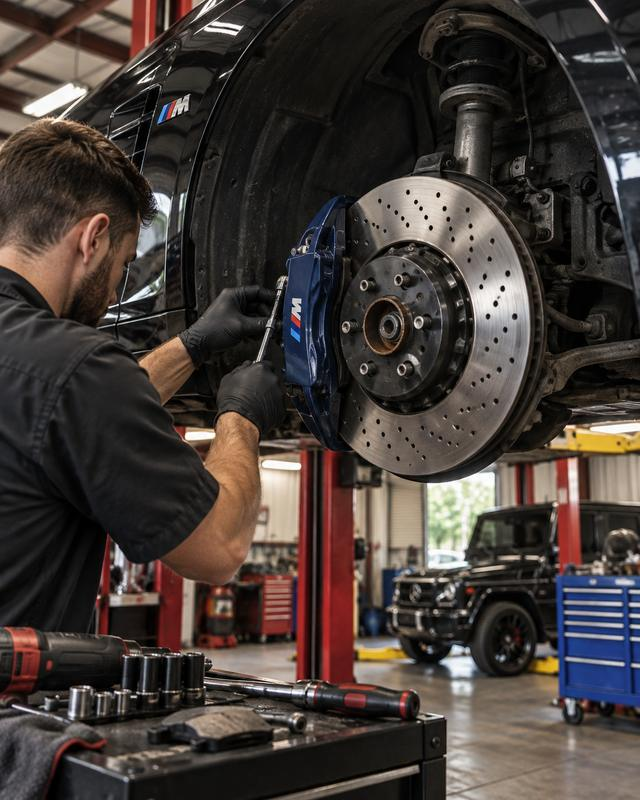
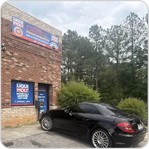

Kayode Olaoye
This shop offers some of the best service money can buy. All of the workers are reliable and friendly. My car and wallet couldn’t be happier. …

Brake repair in Snellville, GA for BMW, Mercedes-Benz, Audi, Porsche and Volkswagen: pads, rotors, wear sensors and fluid fitted to factory specification, measured before we recommend anything and bedded in before you drive away.

German brakes are built to fade late and stop hard, and they are designed to be replaced as a system rather than a pad at a time. Doing it the way the manufacturer intended is what keeps that pedal feel.
4.8 stars on CARFAX. 4.5 stars across 180+ Google reviews.
This shop offers some of the best service money can buy. All of the workers are reliable and friendly. My car and wallet couldn’t be happier. …

Great price
There’s nothing but good things to say about this shop. This car needed a lot of work from oil leaks, engine mounts, airbag light, to coolant leaks, and they did this work in a day. Fast and great work. This if for sure my go to shop from now on. Highly recommend!

Tell us the year, the model and what the car is doing. We say what we would check first and what finding out should cost.
A technician runs the factory software your car speaks — ISTA, XENTRY, ODIS or PIWIS — and a physical inspection, then sends a written report with photos.
Nothing starts until you approve the written estimate, and nothing is added to the bill without a call.
The work is done with OEM-grade parts and genuine fluids, road-tested, and handed back with a service record and a 12-month, 12,000-mile warranty.
Serving Snellville, Loganville, Grayson, Lawrenceville and all of Gwinnett County.
A brake warning on the dash, a grinding or squealing noise, a pulsing pedal under braking, or a longer stopping distance are the usual signs. Most German cars warn you electronically before the pads are through, but a noise or a change in feel is worth checking sooner.
Often, yes. German rotors are made to wear with the pads and carry a minimum thickness stamped on the hub; once they are at or near it, new pads on old rotors wear fast and stop poorly. We measure them and tell you where they stand before you decide.
Brake fluid absorbs moisture from the air over time, which lowers its boiling point and corrodes the ABS unit from the inside. That is why every German manufacturer publishes a fixed interval, usually two years, regardless of mileage.
Yes. The parking brake actuators have to be retracted through the factory diagnostic software before the pads come out, and put back into service afterwards. It is a routine job with the right tools and a very expensive one without them.
Cheap pads can. The wrong compound changes pedal feel, can glaze the rotor and often produces the dust and squeal owners complain about. We fit OEM or OEM-equivalent pads in the compound the car was designed around; if you want a performance compound, we will tell you the trade-offs.
Yes, once the sensor that triggered it is replaced. A wear sensor that has warned has been worn through and is a one-time part. We replace it with the pads and reset the service reminder through the factory interface so the car's own schedule stays accurate.